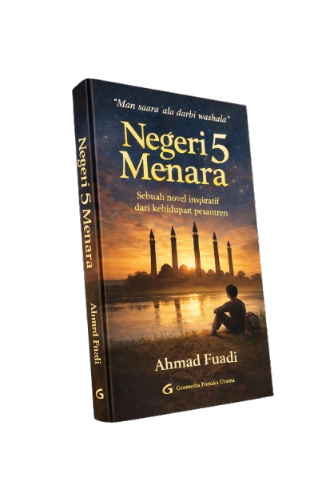
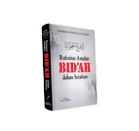

Bedah Buku: Negeri 5 Menara
Ditulis oleh: Ahmad Fuadi

Buku ini menceritakan perjalanan hidup Alif, seorang anak Minang yang menempuh pendidikan di pondok pesantren Madani.
Awalnya penuh keraguan, namun perlahan Alif menemukan makna perjuangan, persahabatan, dan kekuatan impian.
"Man Jadda Wajada -Siapa yang bersungguh-sungguh, dia akan berhasil."
Kalimat itu menjadi semangat utama dalam buku ini. Kisah yang ditulis berdasarkan pengalaman nyata ini sangat menginspirasi,
terutama bagi pelajar yang sedang mengejar mimpi mereka. Penulis berhasil menyampaikan pesan-pesan moral melalui narasi hidup.
Buku ini cocok dibaca oleh remaja dan orang dewasa yang sedang mencari motivasi hidup. Cerita persahabatan, perjuangan, dan cinta belajar membuatnya menyentuh dan relevan bagi pembaca di berbagai usia.
Bedah Buku: Rutinitas Amalan Bidah dalam Setahun
Ditulis oleh: Abdullah bin Abdul Aziz at Tuwaijiri

Pro kontra tentang perayaan hari besar dalam Islam telah berlangsung sejak lama. Ummat Islam terpecah menjadi dua kelompok antara yang setuju dan tidak setuju. Yang perlu dicatat, kejadian seperti itu tidak pernah terjadi pada zaman Nabi dan dua generasi setelahnya.
Rasulullah shallallahu ‘alaihi wasallam bersabda,
“Barangsiapa membuat suatu perkara baru dalam urusan kami ini (urusan agama) yang tidak ada asalnya, maka perkara tersebut tertolak.” (HR. Bukhari no. 2697 dan Muslim no. 1718)
Karena ini perkara baru, maka harus dijelaskan hukumnya agar ummat Islam mengetahui mana yang amalan bidah dan mana yang bukan.
Bagaimana sebenarnya hukum merayakan hari raya dan hari besar keagamaan lainnya dalam perspektif syariat Islam? Apakah tergolong amalan bidah atau bukan? Yang pasti, perayaan hari besar dalam Islam masih dilakukan secara rutin setiap tahunnya di Indonesia. Bahkan sebagian besar hari besar ini telah menjadi agenda rutin, karena sudah dimuat dalam kalender tahunan, seperti Hari Raya Idul Fitri, Idul Adha, Maulid Nabi, Isra Miraj, Tahun Baru Hihriyah dan sebagainya.
Karya ilmiah Rutinitas Amalan Bidah dalam Setahun ini patut dicermati dan diapresiasi oleh setiap Muslim, mengingat temanya yang kontroversial. Namun yang terpenting bukanlah kontroversi yang dipicunya, melainkan substansi yang dibahas di dalam buku ini. Awalnya, karya ilmiah ini adalah sebuah tesis yang akhirnya dipublikasi menjadi buku.
back to KATA log